深夜 · 办公室
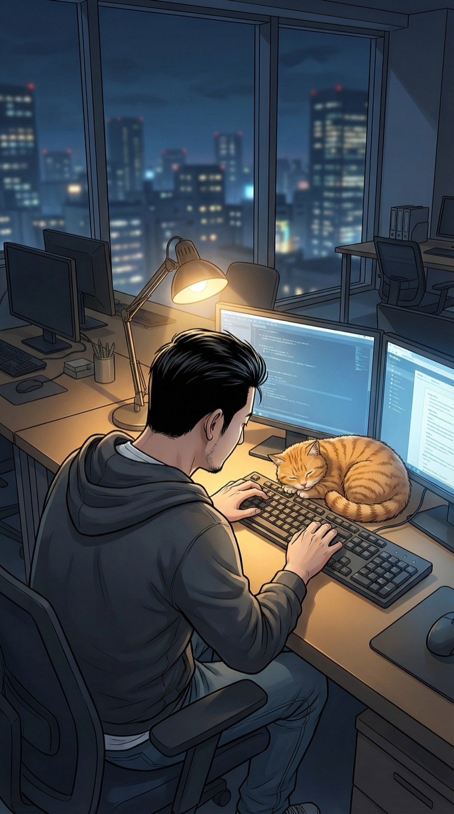
【中景·俯拍·固定】深夜办公室，只有一盏台灯。朱江伏案敲键盘，大橘趴在键盘旁打呼。
融资这事，比写代码难十倍——代码至少报错信息是真的。
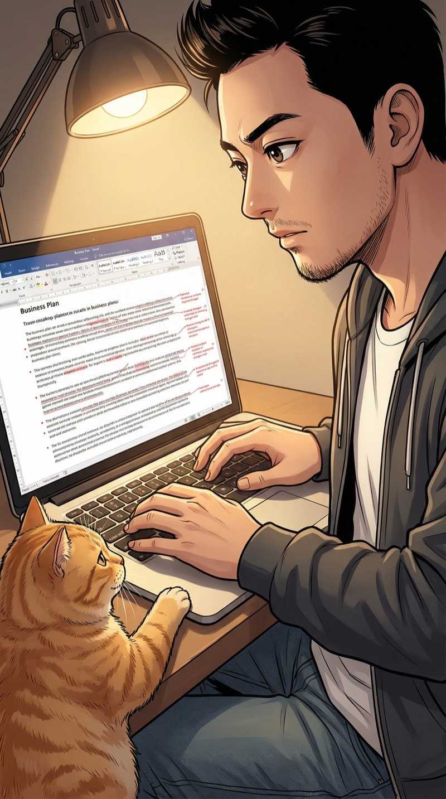
【特写·平拍·固定】笔记本屏幕满是红色修改标记，第47版商业计划书。大橘的爪子搭在触控板边缘。
商业计划书第47版。每个逗号都像是用命换来的。
【特写·俯拍·固定】手机聊天界面。陈薇消息和我的回复。
陈薇：「商业计划书第47版已发赵总。你该睡了。」
我：「第48版在路上。」
创业者改商业计划书，跟写代码的死循环一样——永远有下一版。
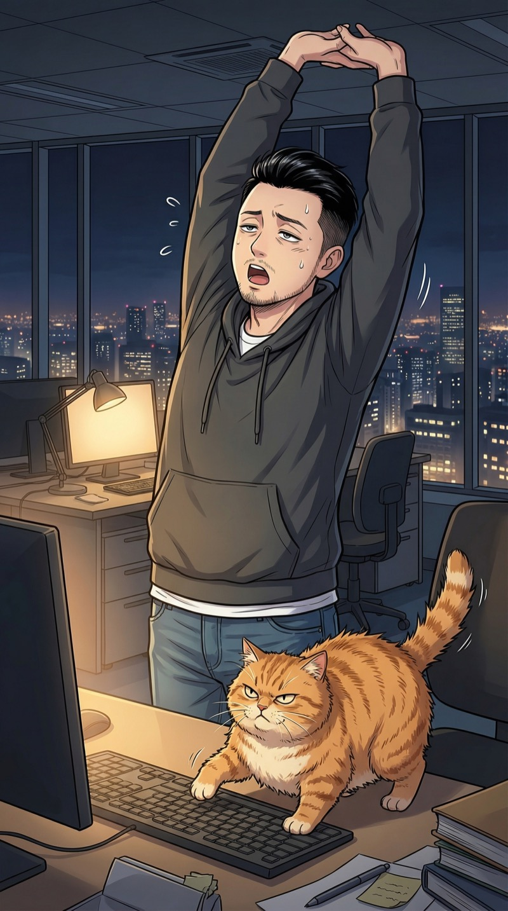
【中景·平拍·固定】朱江起身伸懒腰。大橘被惊醒，炸毛瞪眼。
大橘被吵醒，用一种"你欠我加班费"的眼神看了我一眼。
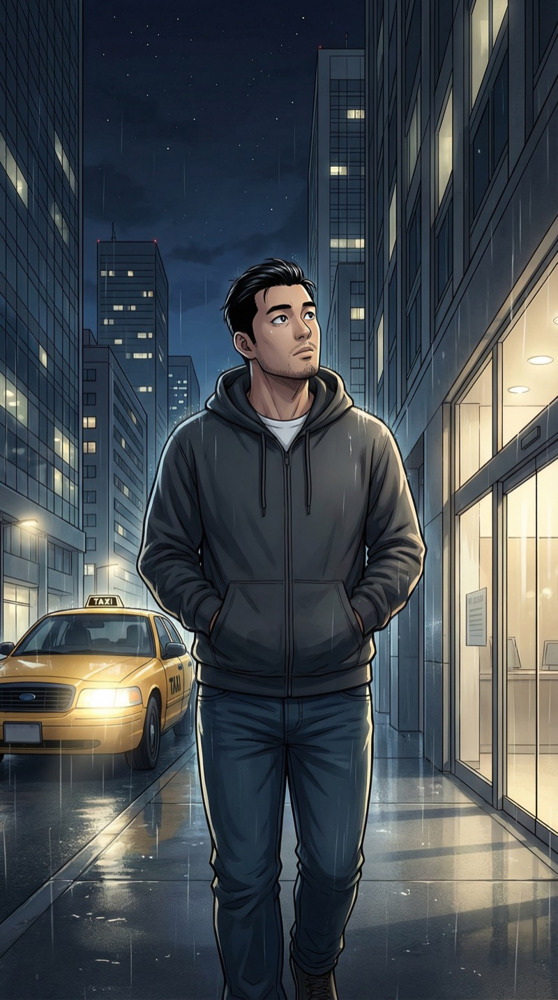
【全景·平拍·固定】朱江走出办公楼大堂，双手插兜仰头看夜空。出租车灯光驶来。
夜色沉沉。整条街只有我和远处亮着灯的便利店。
车祸
【中景·平拍·固定】出租车后座。朱江看手机，脸被屏幕光照亮，微笑。窗外城市灯光掠过。
赵鹏远的微信：「明天见面聊，朱总，我非常看好你们。」
看好？但愿不是"看好了要怎么吃掉"的那种看好。
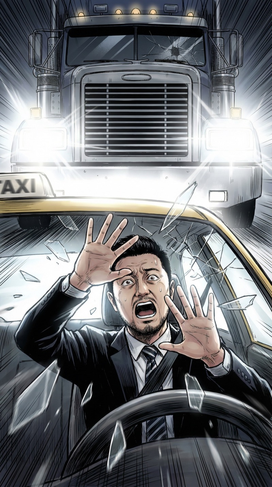
【全景·仰拍·急推】透过挡风玻璃，一辆大卡车车灯直逼而来。玻璃裂纹。司机双手上扬。
——
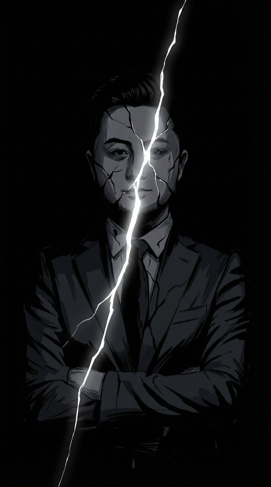
【纯黑画面·中央一道白色裂光】意识在生与死之间。极简抽象。
……
周一 · 早晨7:00
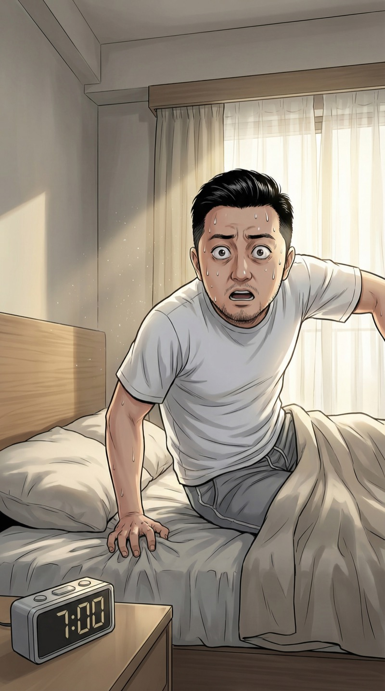
【中景·仰拍·固定】朱江猛地坐起，满头冷汗，眼睛圆睁。晨光透过窗帘。闹钟显示7:00。
心脏在胸腔里疯狂撞击。我刚才……死了？
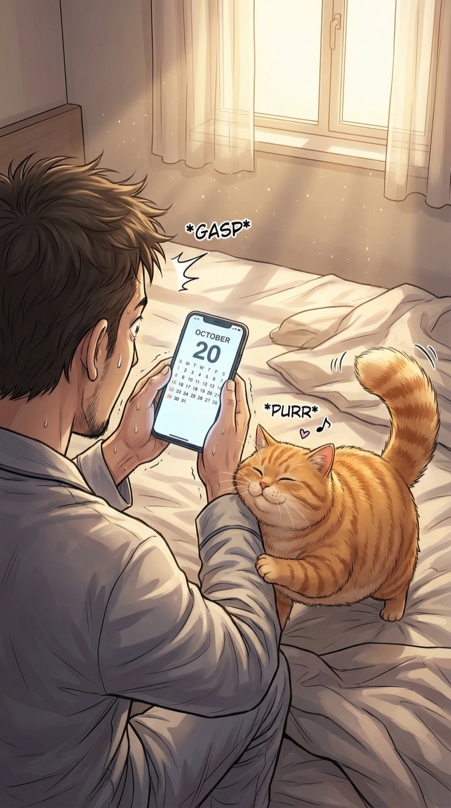
【过肩·俯拍·固定】朱江从背后拍，颤抖的手握着手机看日期——7天前。大橘蹭他手臂。
手机上的日期——7天前。
大橘跳上床蹭我的脸。它昨天明明在办公室啊。
不对。现在没有"昨天"了。只有7天前。
大橘完全不在乎我的生死危机，它只关心一件事——
「喵。」（翻译：早饭呢？）
验证
【特写·侧拍·固定】朱江侧脸特写，眼神从迷茫变为分析模式。晨光打在脸上。
先别慌。验证假设：如果时间真的回溯了，那么——
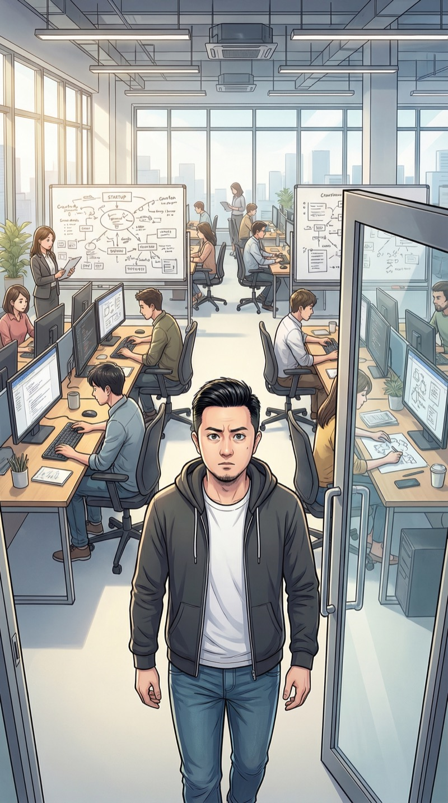
【全景·平拍·缓慢推进】现代开放式创业办公室，白天。员工们工作中。朱江推开玻璃门走进来，眼神扫描一切。
一切都和记忆中一模一样。连小张桌上那杯凉透的美式都在同一个位置。
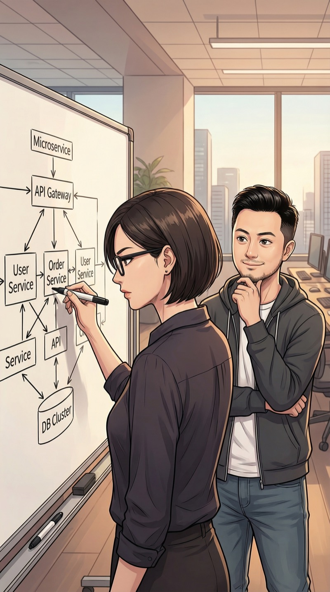
【中景·过肩·固定】陈薇站在白板前画架构图，背对朱江。朱江在几步外观察，单手托下巴，了然的表情。
三……二……一……
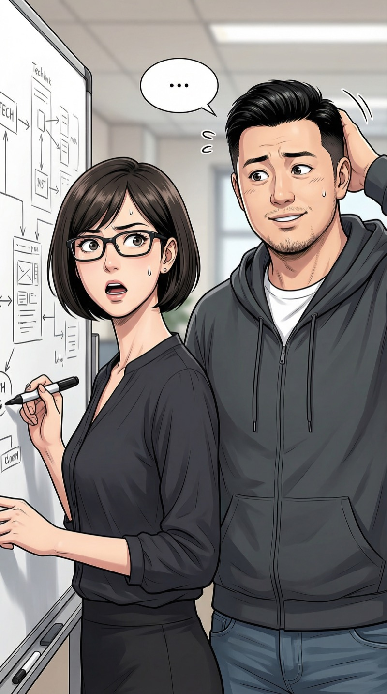
【双人特写·平拍·固定】陈薇转身，表情震惊张嘴，手里还拿着记号笔。朱江尴尬笑着挠头。
我：「你接下来要说'这个微服务耦合度太高'。」
陈薇：「你……怎么知道？你什么时候开始懂技术了？？」
她大概以为我终于开窍了。某种意义上也没错——开了一扇非常诡异的窍。
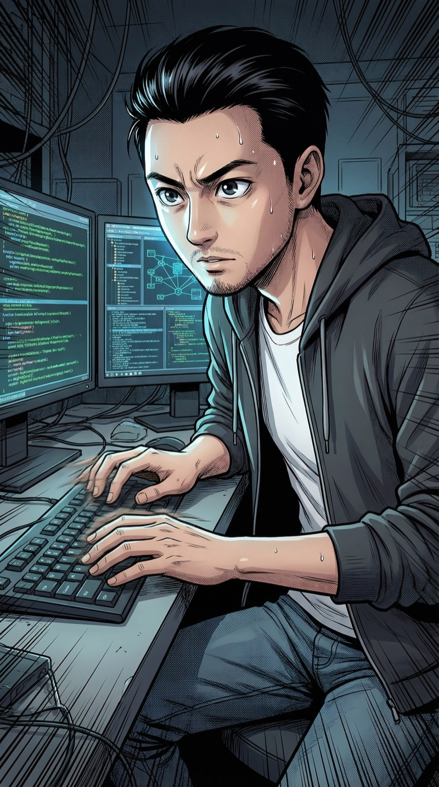
【中景·平拍·跟拍】朱江坐在工位，手指飞速敲击键盘，双屏满是终端和网络图。绿蓝代码映在脸上。
5分钟。渗透测试。内网所有节点。
大学时候的手活，一点没生疏。就像骑自行车——不，更像骑一辆装了火箭的自行车。
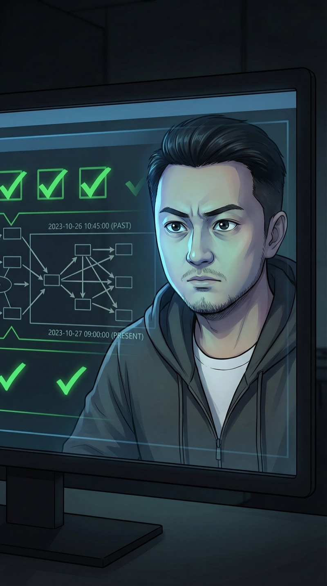
【特写·平拍·固定】屏幕上渗透测试结果——绿色对勾，网络拓扑，时间戳。朱江的倒影映在显示器中，表情凝重。
所有数据。全部回到了7天前的状态。
这不是梦。
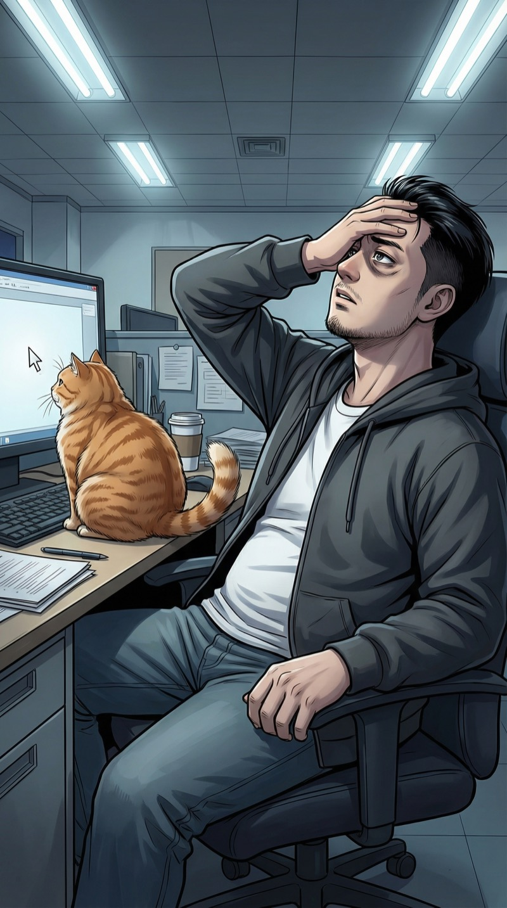
【中景·微仰·固定】朱江靠在办公椅上，一手捂脸。大橘蹲在桌上，尾巴甩动，盯着屏幕上移动的光标。
好消息是，我没死。
坏消息是，如果历史重复，我7天后还会死。
更坏的消息是——我好像知道谁想让我死。
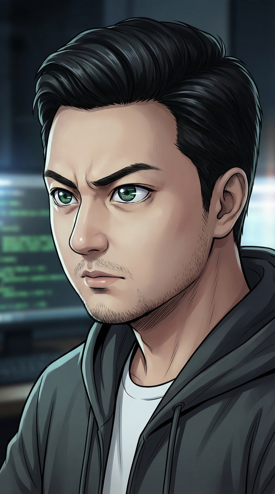
【大特写·侧拍·固定】朱江的眼睛——坚定、锐利、带着一丝算计的怒火。瞳孔中映着数据的倒影。浅景深。
既然你给了我第二次机会……这一次，我要把整盘棋翻过来。
第一次反击
【全景·仰拍·固定】深夜机房，蓝绿色服务器指示灯排列闪烁。朱江蹲在机柜旁连接笔记本。底部打光。
深夜。公司机房。
赵鹏远不知道的是——我在第一世就注意到他发了一封加密邮件。这一次，我要先他一步。
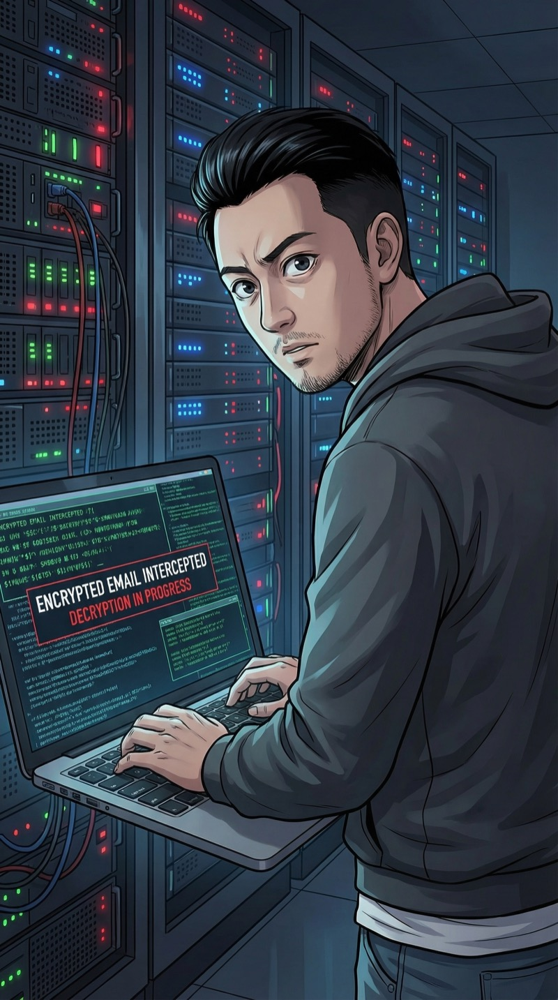
【过肩·俯拍·固定】朱江在机房中敲击笔记本，屏幕显示正在拦截的加密邮件。身体前倾，紧张。
流量拦截完成。三层加密。赵鹏远的安全等级比我预想的高。
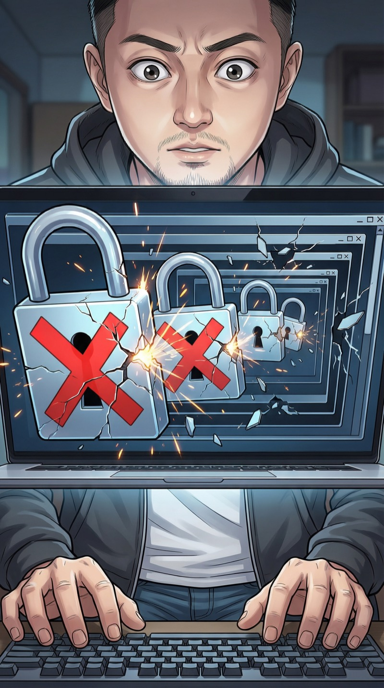
【大特写·平拍·固定】屏幕上加密层逐层破解——前两层红色失败标记。朱江手指悬在键盘上方。
第一层——失败。第二层——失败。
这加密水平……不像是普通投资人的手笔。
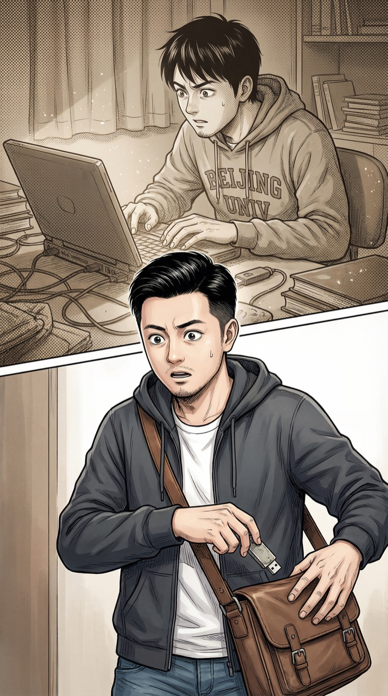
【双重曝光·平拍·固定】分屏效果：左边现在的朱江，右边半透明的大学时期回忆——穿大学卫衣在宿舍编程。朱江从包里掏出旧U盘。
等等。大三那年写的那个暴力破解工具——我应该还留着备份。
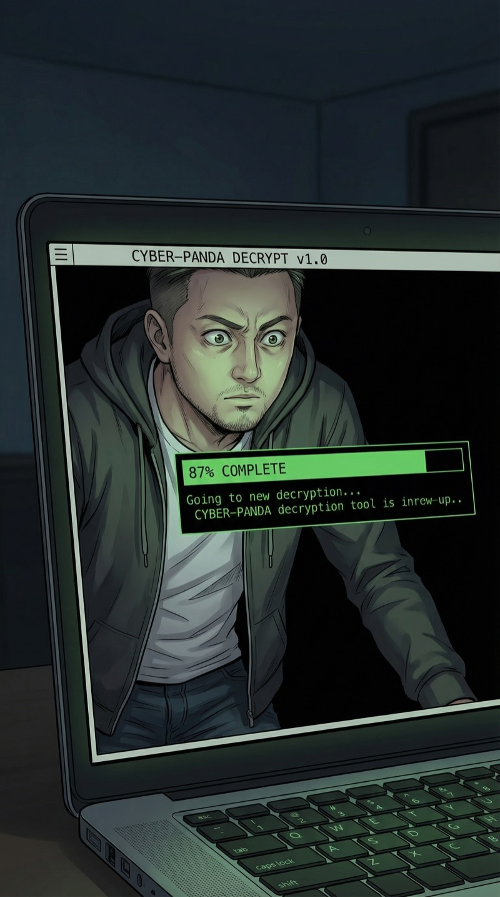
【特写·平拍·固定】屏幕上老旧终端界面运行中，进度条87%，绿字黑底。朱江的脸映在屏幕上，紧张期待。
工具名字叫"期末不挂科"。大三时候取的名。
没想到当年的期末不挂科，今天要用来保命。
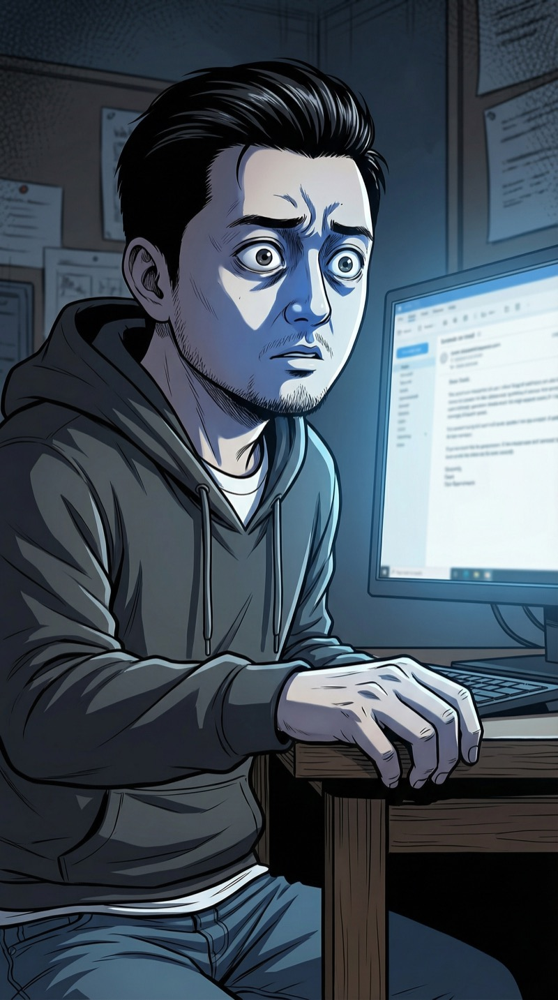
【中景·仰拍·固定】朱江瞪着解密后的邮件，面色惨白，瞳孔放大。一只手死死抓住桌沿。蓝光打出惨烈的面部阴影。
……"九头蛇计划"？他们要把我的模型……武器化？
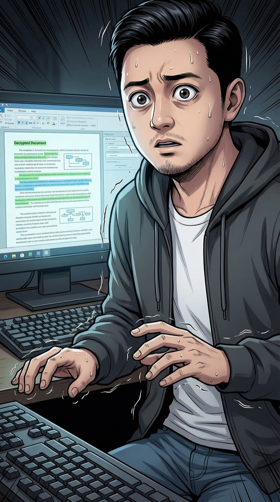
【大特写·俯拍·固定】朱江颤抖的双手悬在键盘上方，指尖冒汗。背景屏幕文档模糊可见高亮段落。
赵鹏远不是投资人。他是猎人。而我的公司……是猎物。
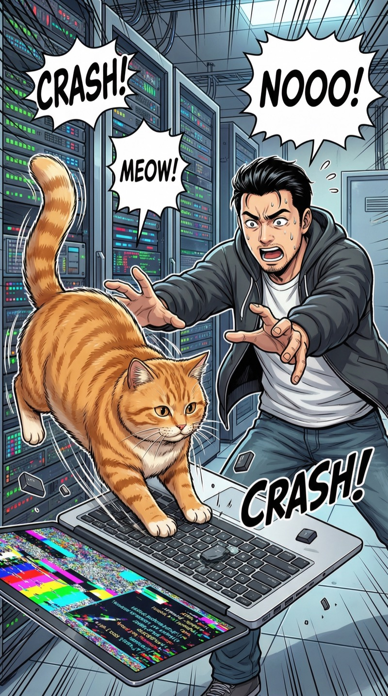
【动态·平拍·固定】大橘从画面外飞扑上笔记本键盘，四爪着地，屏幕瞬间花屏。朱江伸手去抓猫。运动线条。
啪！
大橘选择在这个万分危急的时刻，精准降落在键盘上。
邮件界面崩了。
我：「大橘你——！！」
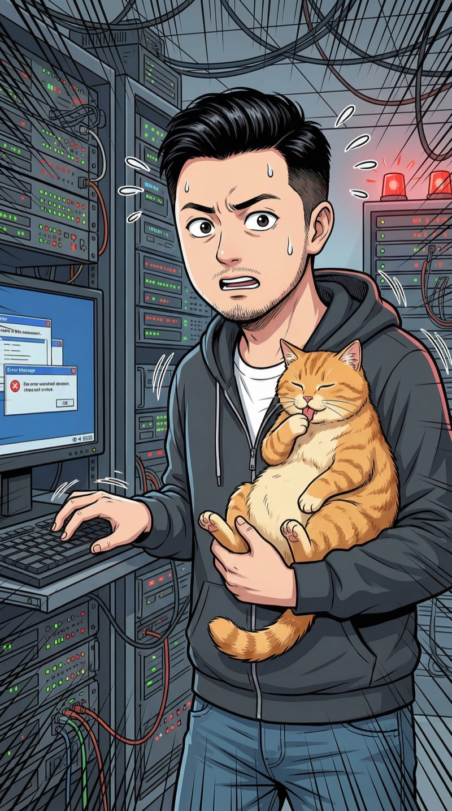
【中景·平拍·固定】朱江一手夹着大橘，另一手在键盘上抢救程序。大橘一脸淡定舔爪子。机房背景。
大橘被我夹在腋下，毫无歉意地舔起了爪子。
我真的怀疑这只猫是来卧底的。
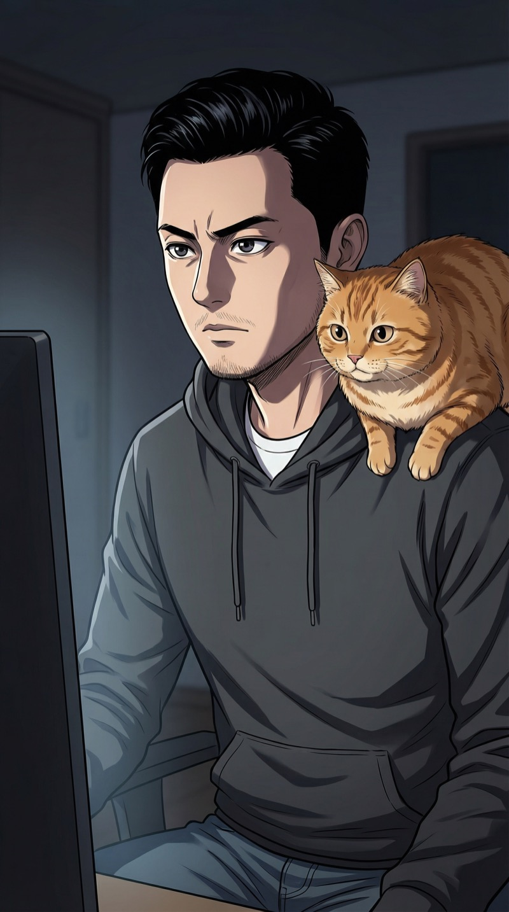
【特写·侧拍·固定】朱江恢复冷静，表情坚毅。大橘蹲在他肩膀上，两者望向同一方向。侧光打出轮廓。
邮件恢复了。证据拿到了。这一次——该我出牌了。
摊牌
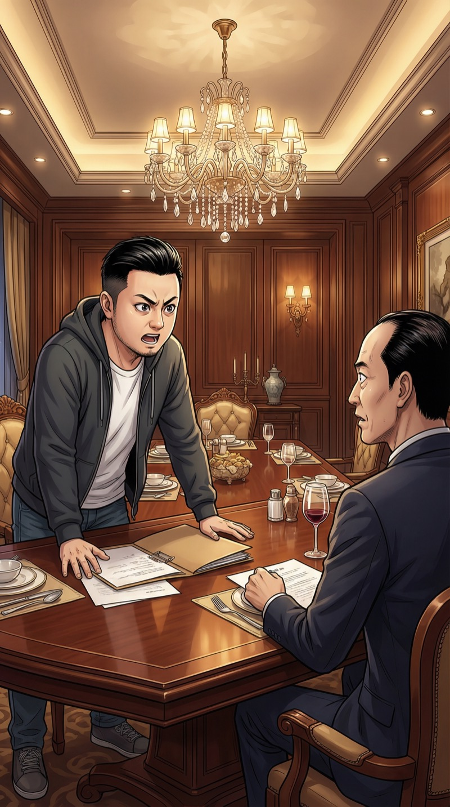
【全景·平拍·固定】高档餐厅包间。朱江和赵鹏远隔桌对坐。朱江把文件夹拍在桌上，身体前倾。赵鹏远笑容僵住。水晶吊灯。
我把文件夹甩在桌上。
我：「九头蛇计划。你要不要解释一下？」
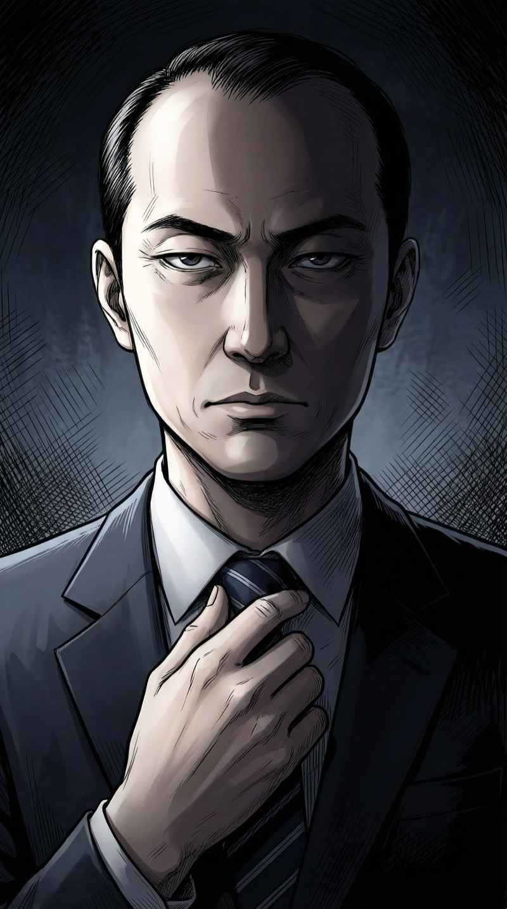
【大特写·平拍·固定】赵鹏远的脸。温和笑容消失，露出冰冷的计算眼神。单手整理领带——微妙的威胁手势。半边脸在阴影中。
赵鹏远：「朱总……你是怎么拿到这封邮件的？」
他的笑容消失了。像摘下了一张面具。
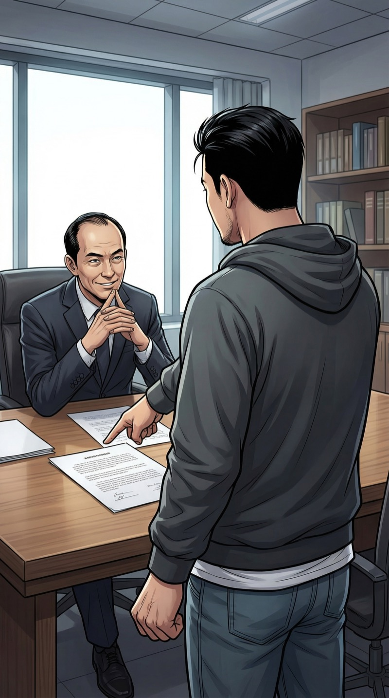
【过肩·仰拍·固定】从朱江肩后拍，他指着桌上文件，姿态强硬。另一只手攥拳。赵鹏远指尖交叉，仰头看他。
我：「你不需要知道。融资取消。」
我的声音很稳。但握在桌下的拳头在发抖。
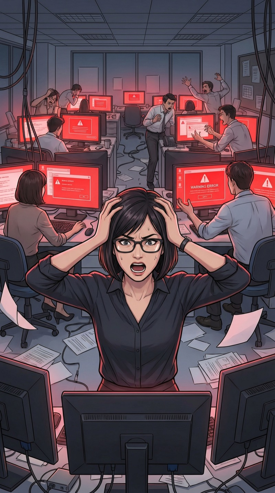
【全景·俯拍·横摇】办公室一片混乱。每台显示器亮红色警报。陈薇双手抱头。员工围着屏幕。文件散落。
当晚。公司服务器全线被攻击。三年的数据——全部被擦除。
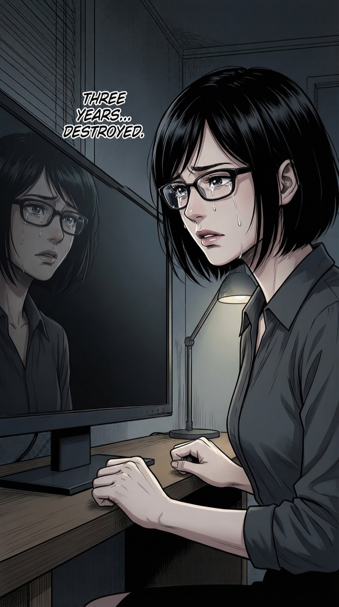
【特写·平拍·固定】陈薇的脸，泪光在眼镜后闪烁，看着黑掉的显示器。显示器映出她的倒影。双手抓着桌沿。
陈薇：「三年的代码……全没了？？」
她的声音在颤抖。这里面有她三千个不眠之夜。
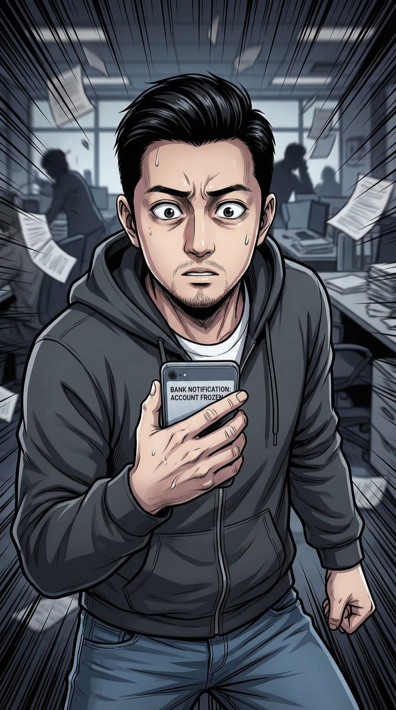
【特写·俯拍·固定】朱江手机屏幕——银行通知：账户已冻结。手指握紧手机，关节发白。背景模糊的混乱办公室。
银行账户。冻结。
工资发不出了。
我低估了对手。远远低估了。
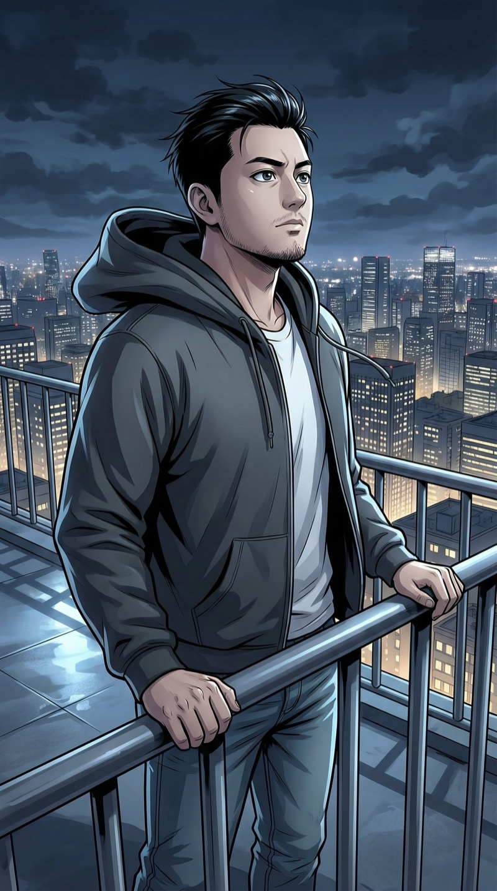
【全景·平拍·固定】朱江独自站在楼顶天台，双手扶栏杆，望向广阔城市夜景。风吹动卫衣和头发。肩膀没有垮——微微仰头。
这一局，我输了。
正面硬刚的后果——不仅是我自己，整个团队都被拖入了深渊。
但没关系。
⚡ 决策点 [DECISION-1]
下一次循环，我应该怎么做？
选项 A
继续正面刚——但做更充分的准备，搜集更多证据后再摊牌
✦ 选项 B — 我的选择
装作什么都不知道。暗中渗透，摸清整个"九头蛇"的网络。在对方毫无察觉时，一击致命。
选项 C
找外部盟友——记者？竞争对手？先借助外力布局，再出手
我的逻辑：正面硬刚已经证明行不通了。但完全依赖外力不是我的风格。
暗中渗透——用我最擅长的方式。黑客思维：不是去攻城门，而是先摸清对方的整个网络，找到最脆弱的节点，然后一击必杀。
但在动手之前，我先做了一件事——把陈薇三年写的所有代码，悄悄备份到了一台谁也找不到的隐秘服务器上。
保护团队，永远是第一优先。
午夜 · 倒计时归零
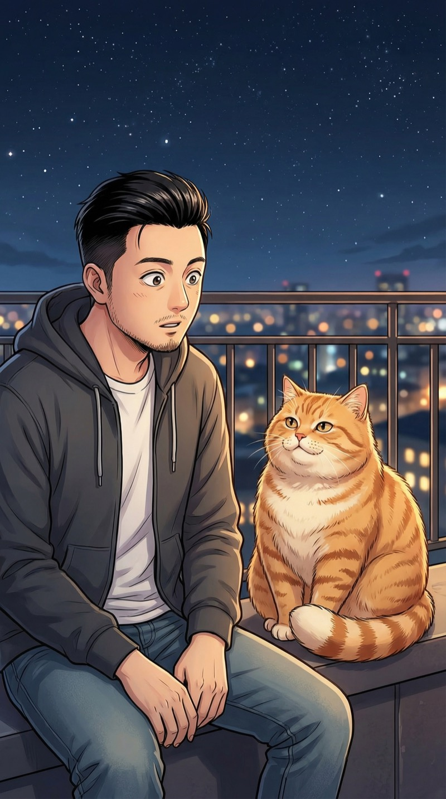
【全景·平拍·固定】天台上。大橘不知怎么也上来了，蹲在栏杆旁。朱江低头看着猫，表情温柔中带苦涩。城市灯光虚化。
大橘不知道怎么也跟上了天台。
你这只猫。明明什么都不懂，但你在这里……挺好。
没关系。我还有下一局。
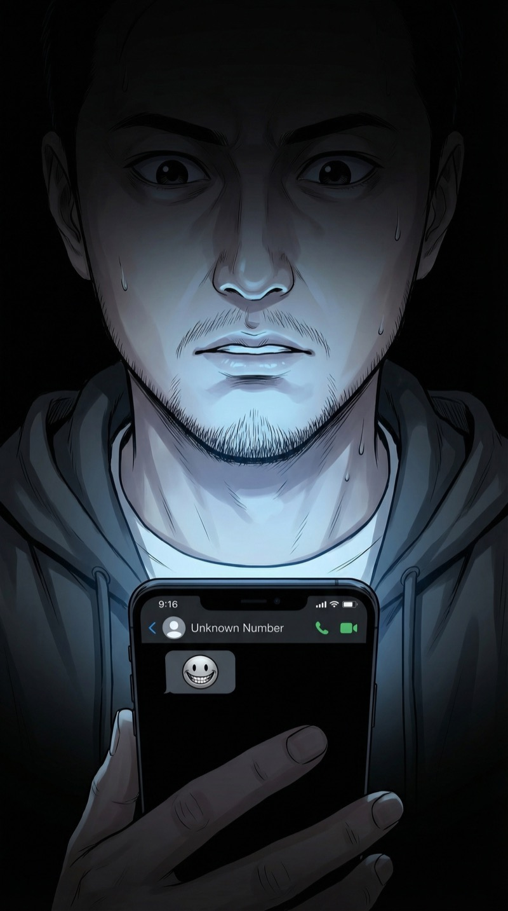
【大特写·俯拍·固定】纯黑背景。手机屏幕亮起——未知号码发来的一条消息。只能看到朱江的下巴和嘴唇——表情凝固。
第7天。午夜。
倒计时归零。我闭上眼——
再次睁开。闹钟响。7:00。周一。
但这一次，我看到了不该出现的东西。
手机上有一条来自未知号码的消息——
「第3次了，朱江。你不是唯一一个在循环的人。😊」
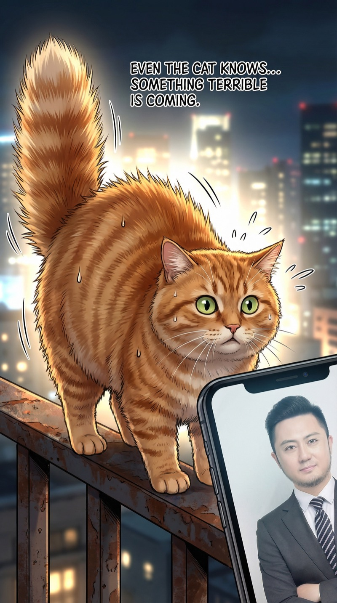
【特写·平拍·固定】大橘在天台栏杆上，全身炸毛，弓背，尾巴膨胀。城市灯光在背后形成光环。猫的眼睛圆睁，盯着手机屏幕。
大橘看着我的手机屏幕——
它的毛，全部炸开了。
第一章 · 完
谁还在循环？
他们是敌是友？
《死循环》第二章 · 即将揭晓